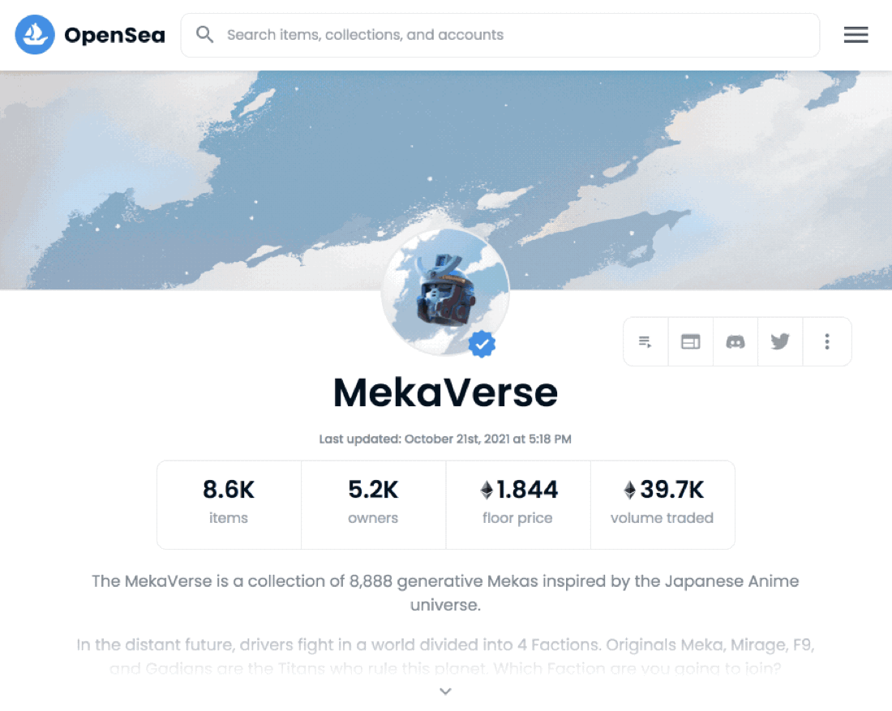

Analyze and evaluate NFT
In this article we want to show different ways to analyze a Non-Fungible Token (NFT). The main aim is to identify potential risks and to be able to estimate future performance.
The details from this article complement the main article: → Buy NFT
Collections
On OpenSea, the NFT’s smart contracts are presented as so-called collections. A smart contract according to the EIP-721 standard corresponds to exactly one collection. According to the documentation, a smart cContract can also reference multiple collections under EIP-1155. On OpenSea the collection page under the section “Items” provides first information about the contained tokens. Here, for example, the number of tokens created, the number of different owners (or actually only the wallet addresses used), the total trading volume and, above all, the important “floor price” are displayed. The floor price indicates what the lowest price in the collection is at the moment. In the “Activity” section, you can make an initial estimate of how actively a collection is currently being traded based on the average price, trading volume and number of sales.

The floor price and the other statistics are not yet sufficient for a well-founded analysis – after all, a particularly rare token may be hiding among the tokens.
Are the basics right? Do Your Own Research! (DYOR.)
Buying an NFT carries great risks. Especially if you are speculating on rapid performance. There are actually investors who buy next tokens “like a monkey” (“ape in”) without much thought. Of course, some investors are always successful with such a strategy. But we are very sure that there are far more losers than winners in this game. We therefore strongly recommend that you always carry out an intensive research before making a purchase. Do Your Own Research! (DYOR.) This principle applies to all coins, as well as to all fungible and non-fungible tokens.
Please always clarify at least the following questions first:
- Is the project really unique?
- Am I buying a pig in a poke?
- What is the reputation of the team behind the project?
- Are the team members known by their real names?
- Are team members known on social networks like Twitter or LinkedIn?
- How old are the social media accounts of the team members?
- Do the members have a good reputation in the community?
- Can the promises made on the website or in advertising be verified in advance?
- What are the concrete plans for the project?
- What is planned after the launch?
- Is there an active and engaged community?
- How did I hear about the project?
- Does the influencer in question transparently state whether they are also invested?
- Did I find out about the project through spam (“Follow/Like/Retweet/Comment to get a free spot”) or through an authentic recommendation?
- Was the project developed according to good principles?
- Is the project decentralized?
- Is the smart contract verified?
- Are there back doors in the code? (Programming knowledge is an advantage here)
Our tip: Check many technical aspects via the browser extension Nifty Scanner.
TODO, this article is just finishing up….
You want to know more about NFT? Continue reading the main article: → Buy NFT
About the author

Johannes made his first bitcoin transaction in 2013. He has been fascinated by cryptography and the cypherpunk ethos ever since. He is a cypherpunk at heart, which is why pretty much everything he builds, like ordpool.space, is open source and free.
More in this series
Buy NFTs - the complete guide
The long one. Wallets, marketplaces, what a token actually is, and three different reasons people buy.
Background knowledge on blockchain tokens
What sits underneath: token standards, and what fungible and non-fungible really mean.
NFT derivatives
Fractional ownership, indices and the things that look like NFTs but are not.
On Cyber galleries and Collabs
A walkthrough of the gallery software The Angels' Wing was built on, written with CasperB.